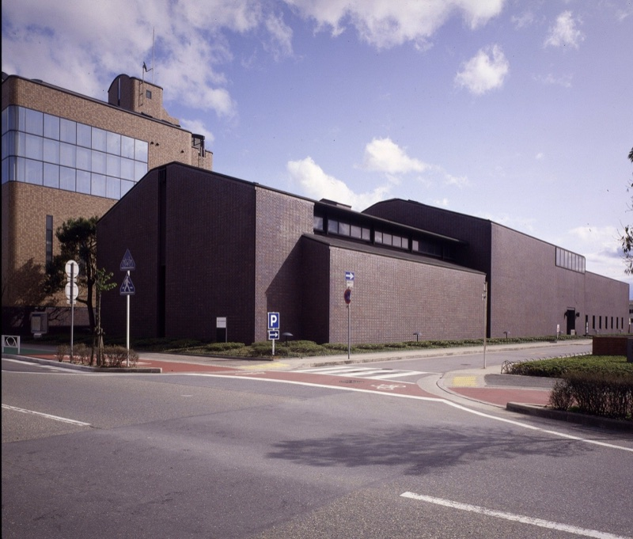
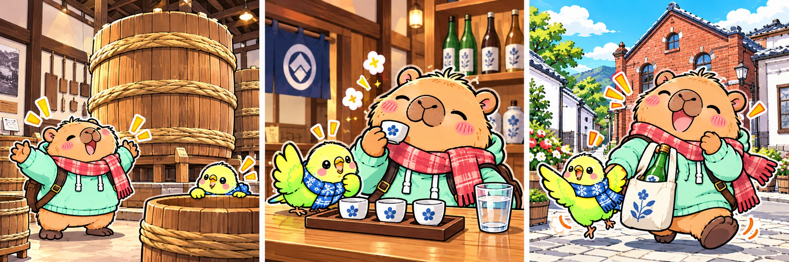

実際の場所を見てみよう写真は「記念館」。酒造りの展示がある「酒蔵館」は、道路をはさんで向かい側です。

旅のイメージイラスト
大桶の中に入って写真が撮れるんだって。みんなで撮ってみたいね📸
01 13:00〜13:50ごろ白鹿の酒ミュージアムで、
白鹿の酒ミュージアムで、
酒造りの世界をのぞく。
最初は、昔の酒造りを見にいこう。大きな木の道具や展示を見てから飲むと、いつもの一杯もちょっと違って感じるかも。
まずは目で楽しむ、一蔵目。
白鹿記念酒造博物館｜鞍掛町8-21
自由見学の案。一般500円（酒蔵館だけ開館の日は300円）。